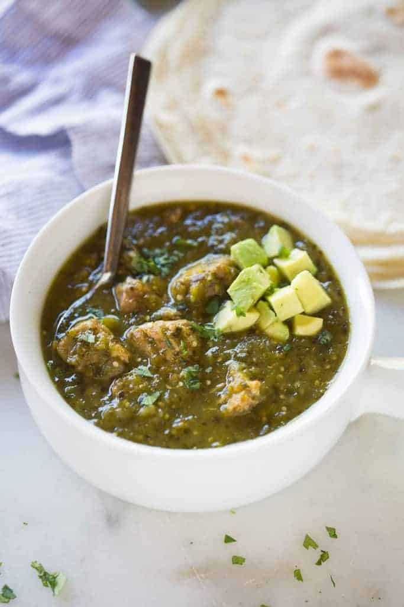

Pork Chili Verde

Tender smoked pork chili verde
Ingredients
- Approximately 3lbs boneless pork shoulder
- Salt and pepper
- 1 16oz jar of salsa verde
- 1/2 yellow onion, diced
- 2 cloves of garlic, minced
- 1 tablespoon cumin
- optional tortillas and rice/beans for serving
Steps
- Preheat pellet grill to 225 F
- Season Pork generously
- Smoke pork for 1 hour
- Increase temperature to 350 F and cook until internal temperature reaches 160 F
- Remove pork from grill and rest for 15 minutes
- Cut pork into small cubes and remove excess fat/gristle
- Blend all other ingredients with a 1/4 cup of water to make sauce
- Add sauce and cubed pork to cast iron pan
- Place pan back on grill at 350 F for 20 minutes or until meat is tender
- Serve with (or without) tortillas and sides
More Recipes